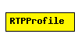

File: Transport/RTP/RTPProfile.ned
C++ definition: click here
(no description)
The following diagram shows usage relationships between modules, networks and channels. Unresolved module (and channel) types are missing from the diagram. Click here to see the full picture.
| Name | Type | Description |
|---|---|---|
| autoOutputFileNames | string |
| Name | Direction | Description |
|---|---|---|
| fromRTP | input | |
| fromPayloadSender | input | |
| fromPayloadReceiver [ ] | input | |
| toRTP | output | |
| toPayloadSender | output | |
| toPayloadReceiver [ ] | output |
simple RTPProfile parameters: autoOutputFileNames: string; gates: in: fromRTP, fromPayloadSender, fromPayloadReceiver[]; out: toRTP, toPayloadSender, toPayloadReceiver[]; endsimple